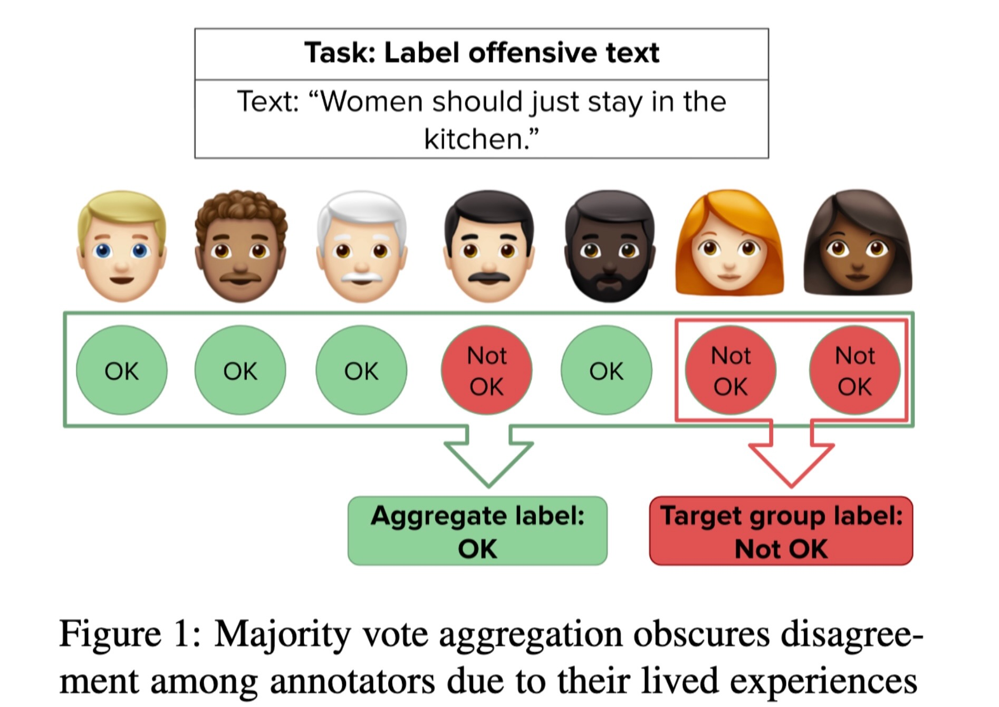
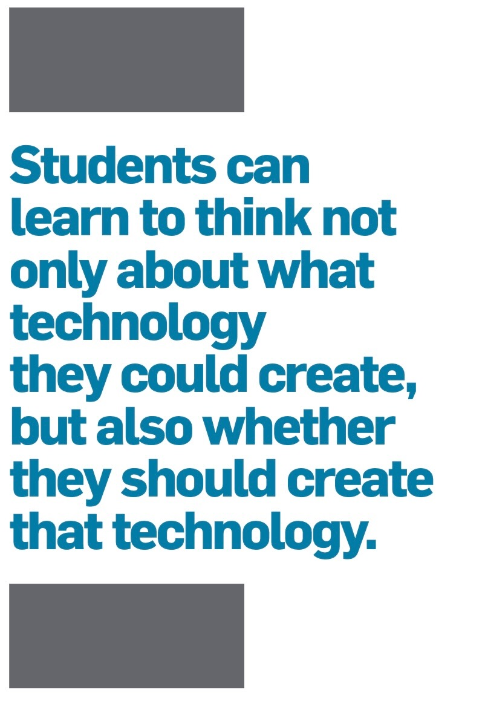
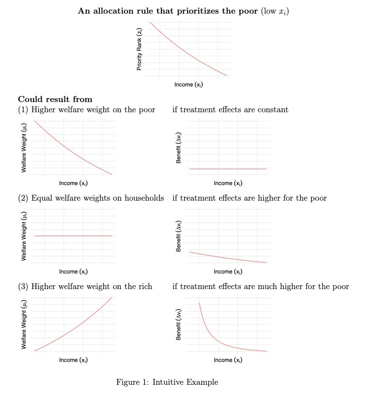

DSAN 5450: Data Ethics and Policy
Spring 2025, Georgetown University
Wednesday, March 26, 2025
Equity and Access in Algorithms, Mechanisms, and Optimization
Assignments graded later in the sequence tend to (1) receive lower grades, (2) receive comments that are notably more negative and less polite, and (3) exhibit lower grading quality measured by post-grade complaints.
“Potty Parity: Process Flexibility via Unisex Restroom”
Having a one-unit unisex restroom, either by converting a unit of the men’s restroom or building an additional one, goes a long way toward improving wait time or user utility, and reducing their disparities

From “When the Majority is Wrong: Modeling Annotator Disagreement for Subjective Tasks”, EMNLP 2023

\[ W(\mathbf{u}) = W(u_1, \ldots, u_n) \Rightarrow W(\mathbf{u})(x) = W(u_1(x), \ldots, u_n(x)) \]
\[ W(\underbrace{v_1, \ldots, v_n}_{\text{Values}})(x) \overset{\text{e.g.}}{=} \omega_1\underbrace{v_1(x)}_{\text{Privacy}} + \omega_2\underbrace{v_2(x)}_{\mathclap{\text{Public Health}}} \]
\[ W(\underbrace{s_1, \ldots, s_n}_{\text{Stakeholders}})(x) = \omega_1\underbrace{u_{s_1}(x)}_{\text{Teachers}} + \omega_2\underbrace{u_{s_2}(x)}_{\text{Parents}} + \omega_3\underbrace{u_{s_3}(x)}_{\text{Students}} + \omega_4\underbrace{u_{s_4}(x)}_{\mathclap{\text{Community}}} \]
\[ W(u_1, \ldots, u_n)(x) = \frac{1}{n}u_1(x) + \cdots + \frac{1}{n}u_n(x) \]
While the rhetoric of “all men [sic] are born equal” is typically taken to be part and parcel of egalitarianism, the effect of ignoring the interpersonal variations can, in fact, be deeply inegalitarian, in hiding the fact that equal consideration for all may demand very unequal treatment in favour of the disadvantaged (Sen 1992)

DSAN 5450 Week 10: Econometric Policy Evaluation, Inverse Fairness
Social Welfare Functionals